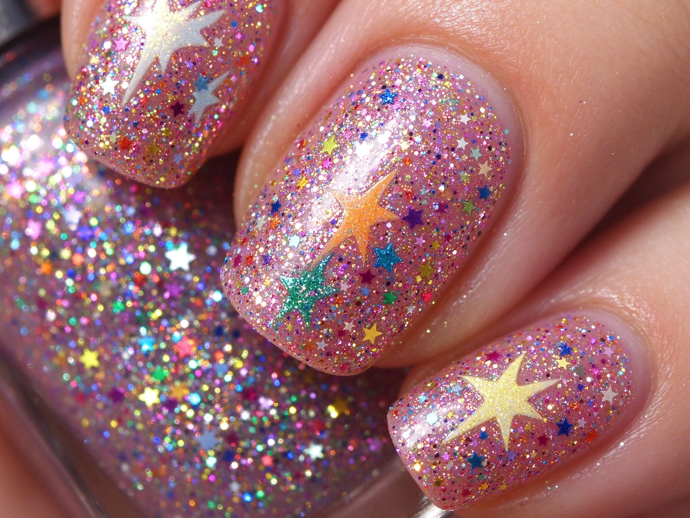

美甲節慶美甲是什麼？入門入門攻略
節慶美甲就是『過節專屬款』，過年紅金、聖誕紅綠、萬聖黑橘，應景一下就好。
節慶美甲原理與辨識重點：美甲師不說的配色應景
節慶款不是一個固定風格，而是依節日換配色和主題：過年走大紅＋金箔＋小元寶，聖誕走紅綠＋雪花＋馴鹿，萬聖走黑橘＋南瓜＋蜘蛛，七夕走粉紅＋愛心。重點是『應景、好拆換』，過完節就能卸下。
誰適合做節慶美甲？過節款對號入座
喜歡過節氣氛、會參加跨年晚會、尾牙、交換禮物、或回家過年被親戚拍照的人；也適合業務、服务业，讓客人一眼感受到節慶感。
節慶美甲美甲施作步驟：應景配色
先確定節日主色（例如過年=紅金）→ 上好主色 → 跳指加應景小圖案（手繪或貼紙）→ 局部加金箔或小亮片 → 封層 → 過節結束後一般卸甲即可。
節慶美甲優缺點分析：美甲持久度與傷甲評估
| 優點 | 說明 |
|---|---|
| 應景可愛、拍照應景、跟節日穿搭一秒 match。 | 是通用流派的招牌，入門就能上手 |
| 缺點 | 說明 |
| 過了節日就顯得突兀，撐不超過一個月；每次節日都要重作，長期下來花費不小。 | 前置與別把整隻手都畫滿應景圖案——那會像小朋友的畫。跳 1–2 指做圖案，其他維持主色，才不會看起來像聖誕樹成精。沒顧好會打折 |

節慶美甲新手雷區：主題明確與常見錯誤
注意：別把整隻手都畫滿應景圖案——那會像小朋友的畫。跳 1–2 指做圖案，其他維持主色，才不會看起來像聖誕樹成精。
節慶美甲和其他美甲做法的差別比較
跟『派對美甲』很像，但派對款追求的是『華麗』，節慶款追求的是『應景主題』，顏色和圖案意義不同。
節慶美甲美甲常見問題 FAQ
Q：過年前幾天做最剛好？ A：過年前 3–5 天做，讓指緣狀態最好、顏色最新。一過完年初五就可以規劃卸甲或換款。
Q：可以只做應景跳指嗎？ A：很可以，這是最聰明的做法——平常是一般款，跳指是節慶點綴，過節後把跳指卸了就好。
Q：業務服務業做節慶款會不會太誇張？ A：不會，反而加分。挑低調一點的做法，例如紅底加一點金箔，比大圖案更得體。